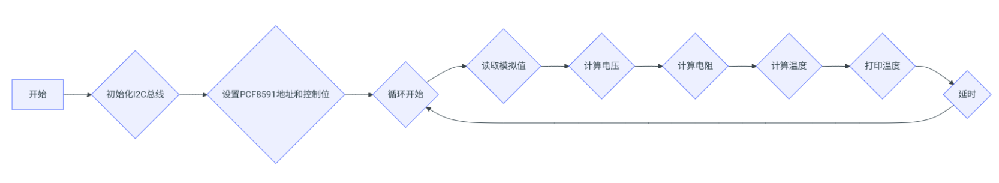
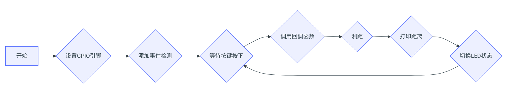

蜂鸣器实验
Lab7实验报告：蜂鸣器实验¶
一、实验介绍¶
蜂鸣器属于声音模块，一般可以分为有源蜂鸣器和无源蜂鸣器。有源和无源 是指内部是否有震荡源。有源蜂鸣器内置振荡器，没有频率变化，直接接上合适 的直流电源即可发声，常用于发出单一的提示性报警声音；无源蜂鸣器由于内部 没有震荡源，所以其驱动方式为脉冲频率调制（Pulse-Frequency Modulation，PFM）， 可以通过调控脉冲频率发出不同频率的声音信号。本次实验任务为利用蜂鸣器播 放一段音乐（音乐自选），并通过编程控制蜂鸣器发出相应的音符。
二、实验原理¶
- 有源蜂鸣器：
- 内部含有振荡电路，可以将恒定的直流电转化为一定频率的脉冲信号，因此只需给它施加合适的直流电压即可让它发出声音。
-
在本实验中使用的有源蜂鸣器为低电平触发，即当GPIO引脚设置为低电平时，蜂鸣器会响起；反之则停止发声。
-
无源蜂鸣器：
- 没有内置驱动电路，必须由外部提供特定频率的方波信号才能工作。由于声音频率可控，可以发出“do re mi fa so la xi”的声效。在一些特例中，可以和 LED 复用一个控制口。
- PFM（Pulse-Frequency Modulation）是一种仅使用两个电平（高/低）表示模拟信号的调制方式，在这里用来生成可变频率的脉冲序列以驱动无源蜂鸣器。
-
PWM（Pulse-Width Modulation）虽然不是本次实验的重点，但作为一种常见的调制技术，它同样适用于控制蜂鸣器或其他设备的输出特性。
-
编程思路：
- 对于有源蜂鸣器，只需要简单地配置对应的GPIO引脚状态为高或低就可以控制其开关。
- 对于无源蜂鸣器，则需要创建一个包含多个音符频率值的列表，并依次遍历这个列表，每次根据当前音符设定适当的PWM频率，使蜂鸣器按照指定旋律发声。
三、实验步骤¶
（1）有源蜂鸣器实验¶
- 硬件连接：
- 连接Raspberry Pi、T型转接板和有源蜂鸣器模块之间的I/O、VCC3.3V和GND引脚。
- 通电后，蜂鸣器会发出持续的“滴滴”声音。
（2）无源蜂鸣器实验¶
- 硬件连接：
- 连接Raspberry Pi、T型转接板和无源蜂鸣器模块之间的I/O、VCC和GND引脚。
-
确保选择支持PWM输出的GPIO引脚（本次使用GPIO11，BCM编号）。
-
编写代码：
- 导入
RPi.GPIO和pigpio库，设置蜂鸣器的GPIO引脚和频率参数。 - 编写函数
play_music()，该函数定义了一系列音符及其对应的频率，并通过循环调用这些频率来驱动蜂鸣器发出音乐。